인사를 켜고 직원을 등록하면 특정 날짜의 인원을 볼 수 있습니다. 휴가는 법정 일수를 계산하고 상사가 승인하며, 근태에서는 주 52시간 초과 위험을 확인하고 월 마감을 합니다. 개인정보는 원장 밖에 둡니다.
무엇을 · 왜#
인사는 다른 모듈 없이 켤 수 있습니다. 휴가와 근태는 인사가 있어야 켤 수 있으며, 입사·퇴사 이벤트를 구독합니다. 근태는 승인된 휴가 이벤트를 구독해 그날을 결근으로 처리하지 않습니다.
| 원장에 남는 것 | 원장 밖에 두는 것 |
|---|---|
| 이름, 사번, 부서, 직책, 상사, 입퇴사일 | 연락처, 주소, 생년월일, 비상 연락처, 급여 계좌 |
| 휴가 일수와 날짜, 상태 | 휴가 사유, 반려 사유 |
원장에는 어느 칸이 바뀌었는지만 남습니다. 원장 밖의 값은 삭제 요청을 받으면 사유를 남기고 지웁니다. 이름과 입퇴사일은 지난 문서에 표시해야 하므로 지우지 않습니다. 주민등록번호는 받지 않습니다.
전문가 검수 전입니다
휴가와 근태 규칙은 근로기준법 조문을 대조해 만들었지만 노무사 등 전문가의 검수를 받지 않았습니다. 화면에도 그렇게 표시합니다. 상시 4명 이하 사업장에는 제60조, 제61조, 제50조, 제53조가 적용되지 않으며, 적용 여부는 회사가 판단합니다.
먼저 알아 둘 것
- 가온가전은 가상 회사이고, 사람, 연락처, 시간은 모두 가상입니다. 화면은 로컬 Supabase에서 찍었습니다.
- 녹화 전에 넣은 것: 구성원 한인사(인사), 김상사, 박영업(영업), 오동료, 부서 셋, 직원 넷, 공휴일
회사 창립기념일(2026-11-17), 오동료의 지난주 근무 기록 5일, 박영업의 9월 기록 2일. - 근태 모듈은 화면에서 켜지 않았습니다. 지난달을 마감하려면 그 달이 끝나기 전에 켜져 있어야 해서, 넉 달 전 날짜로 켠 상태를 명령으로 만들었습니다.
- 기록을 넣지 않은 사람은 근태 화면에 결근으로 나옵니다.
따라 하기#
- 인사 켜기. 관리자로 설정 → 모듈을 엽니다. 휴가 카드에는
인사 모듈을 먼저 켜야 합니다라고 적혀 있습니다. 인사의 켜기를 누릅니다. 켜기 전의 입사와 퇴사는 원장에 없다고 알려 줍니다.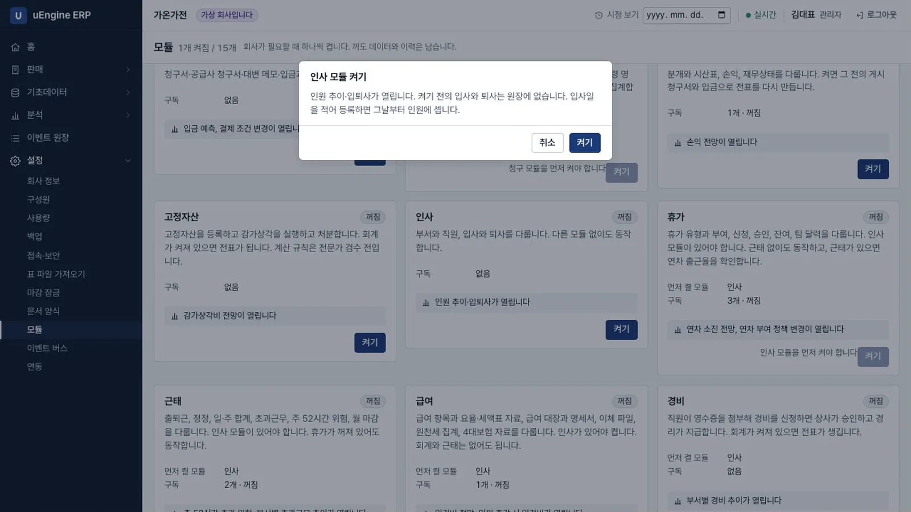
인사 켜기 - 직원 등록. 한인사로 로그인해 인사 → 직원 → 새로 만들기에서 이름
박영업, 입사일2025-03-04, 부서영업, 직책영업, 상사김상사, ERP 구성원박영업을 넣고 저장합니다. 사번을 비우면E00005처럼 매겨집니다.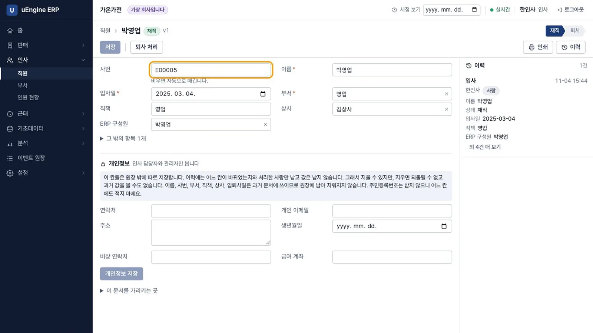
직원 등록 - 개인정보. 같은 화면의 개인정보에 연락처와 주소를 넣고 저장합니다. 기록에는
연락처, 주소처럼 칸 이름만 남습니다. 녹화에서 원장을 검색해 값이 없는 것을 확인했습니다.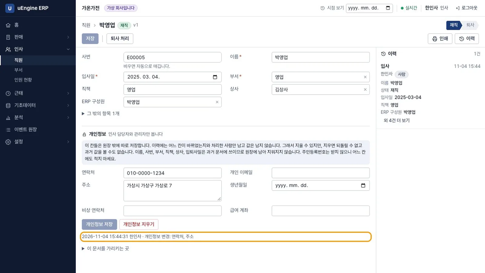
개인정보 - 퇴사. 직원
배퇴직을 열어 퇴사 처리를 누르고 퇴사일을 넣습니다. 사유는 받지 않습니다. 상태가 퇴사가 되고 입력 칸이 사라집니다. 새 직원의 상사 칸에배퇴직을 입력하면일치하는 항목이 없습니다가 나옵니다.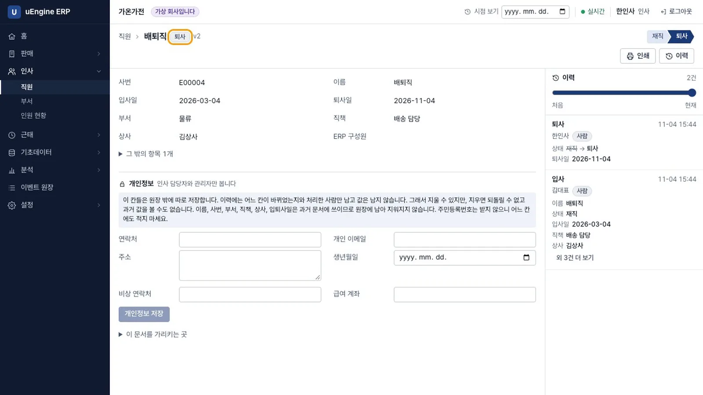
퇴사 - 어느 날의 인원. 인사 → 인원 현황을 열면 오늘 인원은 5명입니다. 날짜를 아홉 달 전
2026-02-04로 바꾸면 4명이고, 부서별 인원과 명단도 그날 기준입니다.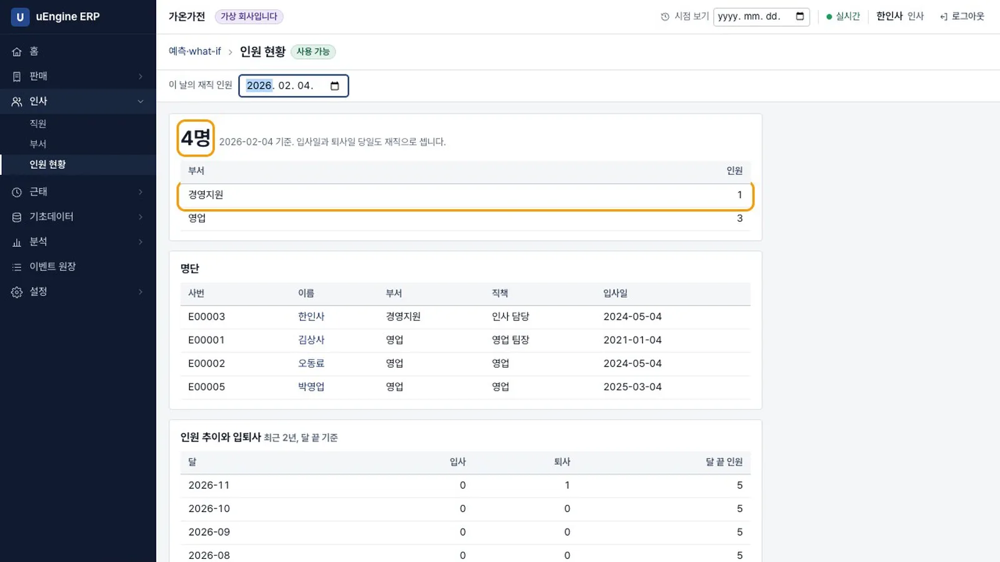
인원 현황 - 휴가 켜기. 관리자로 휴가의 켜기를 누릅니다. 재직 직원의 연차를 부여 정책대로 계산한다고 알려 줍니다.
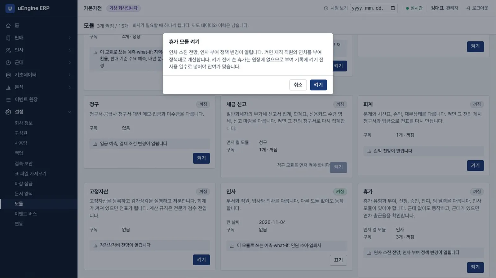
휴가 켜기 - 잔여 보기. 한인사로 휴가 → 잔여 현황을 엽니다. 입사 1년이 넘은 박영업의 연차는 15일입니다.
출근율 미확인은 마감된 근태가 없어 출근율이 80% 이상인지 확인하지 못했다는 표시입니다.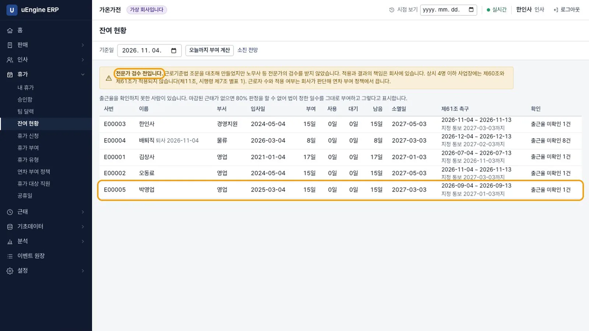
잔여 현황 - 신청. 박영업으로 휴가 → 내 휴가에서 시작일
2026-11-16, 끝일2026-11-18, 사유를 적고 신청을 누릅니다. 화요일이 회사 휴일이라 2일입니다. 잔여 일수는 13일로 나옵니다. 사유는 본인, 상사, 인사 담당자만 봅니다.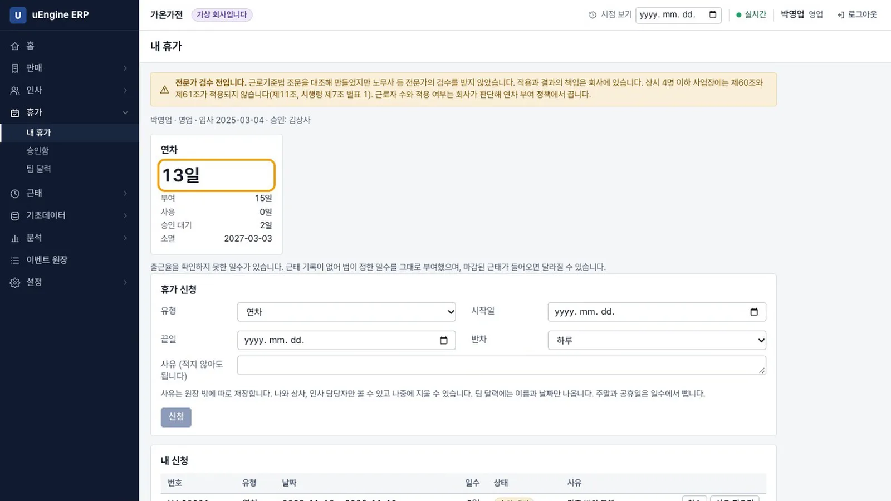
신청 - 넘치는 신청. 2026-11-23부터 2026-12-18까지 신청하면
연차 잔여가 모자랍니다. 신청 20일, 그 날짜에 쓸 수 있는 일수 13일이라는 안내가 나오고 신청되지 않습니다.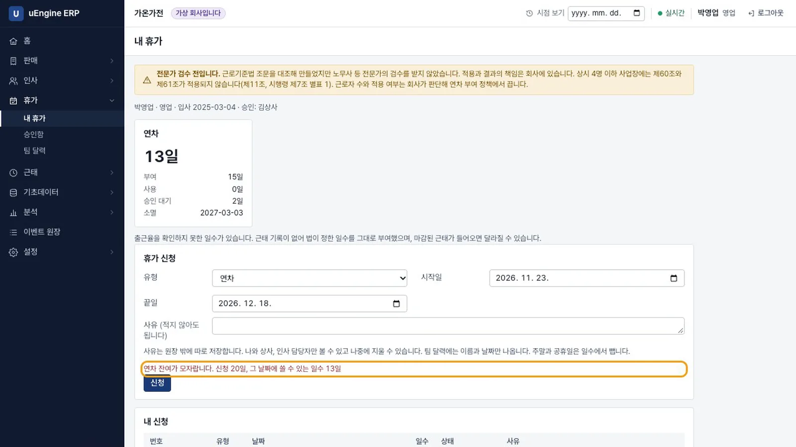
잔여 부족 - 승인. 김상사로 휴가 → 승인함을 엽니다. 사유와 경로
상사가 보입니다. 승인을 누릅니다.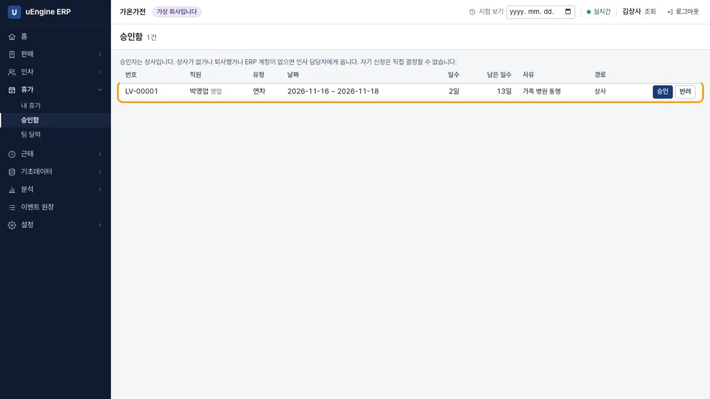
승인함 - 팀 달력. 휴가 → 팀 달력에는 이름과 날짜만 나옵니다. 사유도 휴가 유형도 나오지 않습니다.
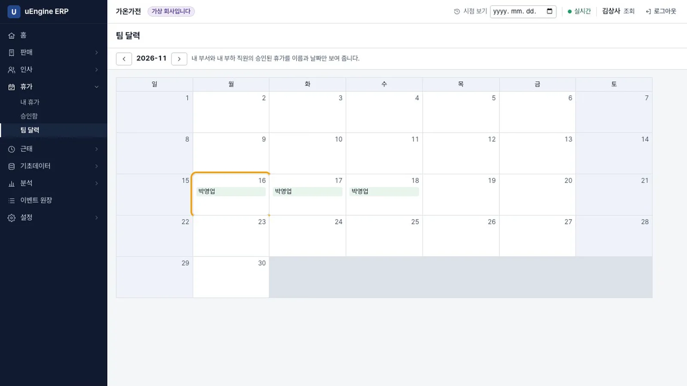
팀 달력 - 출근과 퇴근. 박영업으로 근태 → 내 근태에서 출근과 퇴근을 누릅니다. 시각은 서버가 정합니다. 아래 월별 기록에서 휴가를 승인받은 2026-11-16은
휴가로 나옵니다.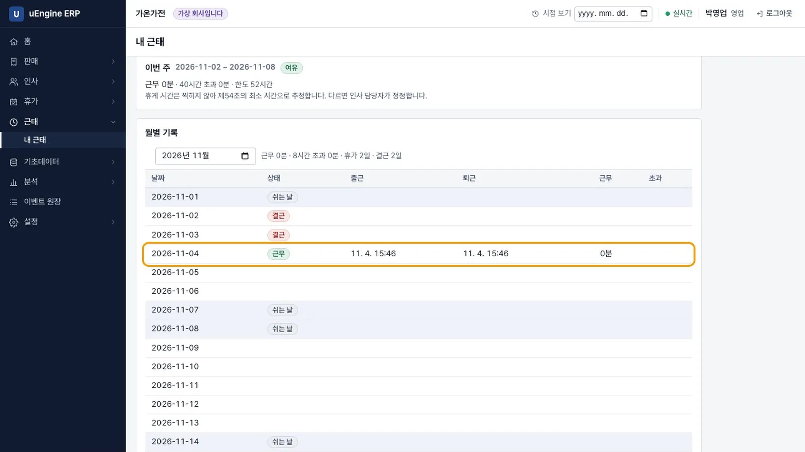
내 근태 - 주 52시간. 한인사로 근태 → 주간 현황에서 지난주를 고릅니다. 60시간 일한 오동료가 맨 위에
주 52시간 초과로 나옵니다. 40시간 초과 시간은 따로 보입니다.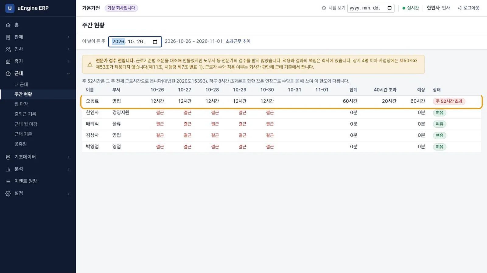
주간 현황 - 월 마감. 근태 → 월 마감에서
2026-09를 고릅니다. 퇴근이 빠진 기록이 있으면 마감 단추가 꺼져 있습니다. 정정에서 퇴근 시각과 사유를 적으면 박영업의 근무가 16시간 30분이 됩니다. 마감을 누르면마감됨이 되고, 이달의 기록은 고칠 수 없습니다.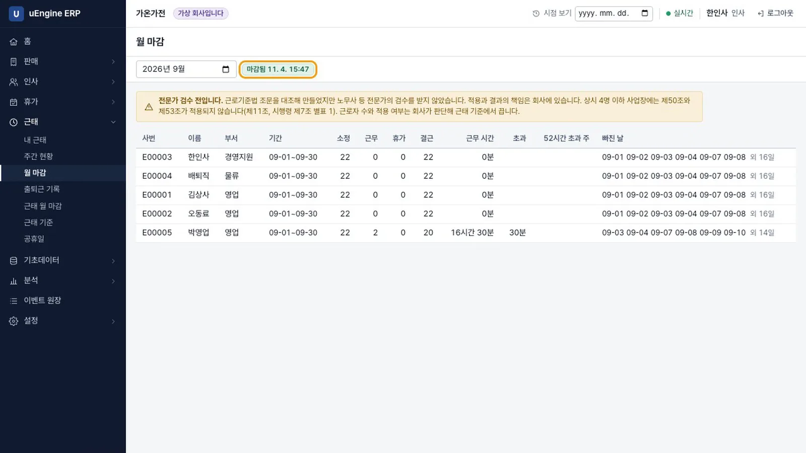
월 마감 - 이력. 고친 근태 기록을 열면
근태 정정에 사유와 바뀐 값이 남아 있습니다.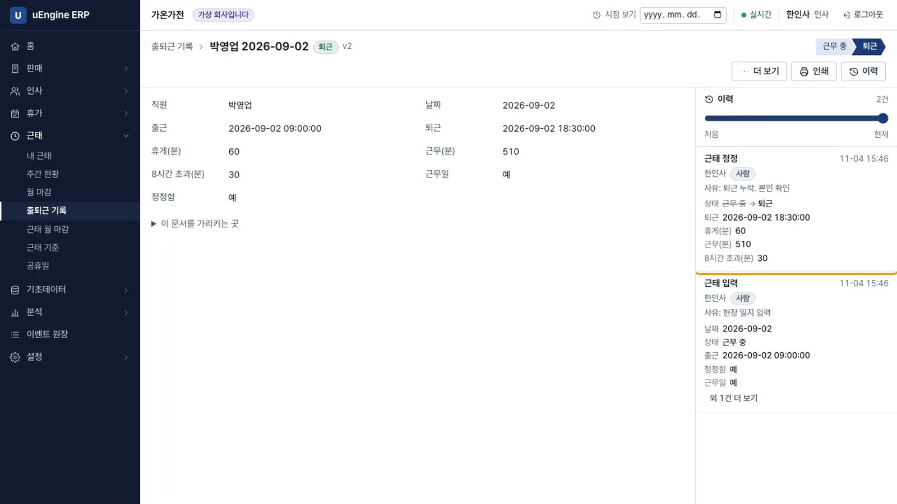
정정 이력
확인 문제#
연락처를 원장에 넣지 않는 이유는 무엇인가요?
원장은 지울 수 없기 때문입니다. 삭제를 요청할 수 있는 값은 원장 밖에 두고, 원장에는 어느 칸이 바뀌었는지만 남깁니다.
동료가 팀 달력에서 내 휴가 사유를 볼 수 있나요?
볼 수 없습니다. 팀 달력에는 이름과 날짜만 나옵니다. 사유는 본인, 상사, 인사 담당자만 봅니다.
이번 달을 지금 마감할 수 있나요?
마감할 수 없습니다. 달이 끝난 뒤에 마감할 수 있고, 근태 모듈을 켜기 전의 달도 마감할 수 없습니다. 퇴근이 빠진 기록이 있으면 먼저 고쳐야 합니다.